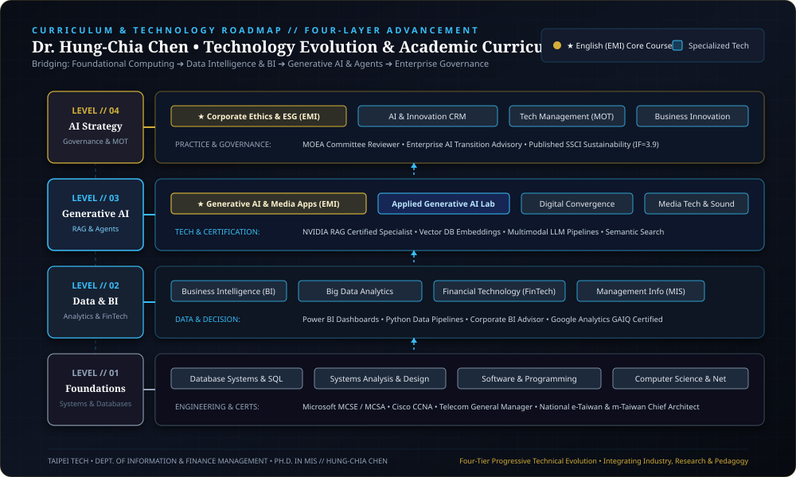

Doctoral Dissertation: "Sustainable Operational Models for the Digital Music and Multimedia Industries" — Fusing deep computational analytics, enterprise Generative AI, audio frequency DSP, and corporate management governance to build resilient cross-domain innovations.
Ph.D. in Information Management specializing in Enterprise Generative AI, RAG Knowledge Architectures, and Business Intelligence. Led nationwide digital transformation initiatives as Technical Director of e-Taiwan and m-Taiwan flagship programs. Appointed Project Director & Principal Reviewer for the Ministry of Economic Affairs (MOEA) Industrial Technology programs.
I. Four-Layer Technology Evolution & Curriculum Roadmap
TECHNOLOGY EVOLUTION MAPA multi-tiered architectural framework and curriculum design bridging foundational system computing to executive enterprise AI strategy:

II. National Digital Infrastructure Programs & Industry Reviewer Appointments
NATIONAL FLAGSHIP PROJECTS🏛️ National Flagship Programs (e-Taiwan & m-Taiwan)
Served as Chief Infrastructure Architect for multi-billion NTD national programs under the Executive Yuan and Ministry of Economic Affairs:
- • e-Taiwan National Initiative: Designed resilient network topologies, enterprise database backbones, and nationwide electronic public service platforms.
- • m-Taiwan Mobile Broadband: Directed wireless network integration and smart telemedicine demonstration projects connecting regional health bureaus with major medical centers.
🌐 MOEA Innovation Project Director & Committee Reviewer
Appointed Project Director & Principal Evaluation Reviewer for the Department of Industrial Technology (DoIT) and Industrial Development Bureau (IDB):
- • Evaluated commercial viability, system architectures, and AI transition roadmaps for industrial research initiatives.
- • Audited enterprise software design, cross-border digital platforms, and cloud infrastructure deployments for funded consortia.
Verified Industry Technical Certifications:
- • NVIDIA Deep Learning Institute (DLI): Building RAG Agents with LLMs
- • Google Analytics Individual Qualification (GAIQ): Advanced Enterprise Analytics
- • Microsoft Certified Systems Engineer (MCSE / MCSA): Enterprise Windows Infrastructure
- • Cisco Certified Network Associate (CCNA): Enterprise Routing & Switching
Corporate Advisory & Institutional Engagements:
- • ITRI (Industrial Technology Research Institute): Digital Transformation Research Advisor
- • Corporate BI Advisory: Customer Data Platforms (CDP) & Business Intelligence for Retail/Telecom
- • Academic Evaluation: Ranked 2nd University-wide across all faculty in student teaching evaluations (NTUT)
Serial entrepreneur and C-suite executive with extensive experience establishing cross-strait operating companies in Taipei and mainland tech hubs. Former Telecom General Manager and corporate strategist. Renowned national mentor who coached student teams to an unprecedented 4-year national championship winning streak in top business competitions across Taiwan.
I. Cross-Strait Entrepreneurship & Corporate Governance
CROSS-STRAIT ENTREPRENEURSHIPFounded Jinghong Creative Tech (Taipei HQ & Mainland Branches)
Founded and served as CEO, establishing cross-strait branches. Governed venture fundraising, multi-region teams, cross-border e-commerce platforms, and cash flow risk management.
Telecom & Tech C-Suite Executive Leadership
General Manager of Telecom Platforms at All-Star Telecom; VP of Interactive Technology at Chyau-Fwu Media; Producer / SE at KG Telecom. Extensive operational experience across multiple tech subsidiaries.
Industry Associations & Civic Governance
Served as 1st & 2nd Term Vice Chairman of the Taipei Pop Music Industry Association, advising on public policy; Technical Committee Advisor for SOSA Secure Online Shopping Association.
II. National Competition Mentorship: The Unbroken Championship Legacy
NATIONAL COMPETITION MENTORSHIPIII. Strategic Core Competencies & Executive Pedagogy
MANAGEMENT EXCELLENCE💡 Venture Incubation & Business Modeling
Instruction in Business Model Canvas (BMC), disruptive pricing structures, venture financial feasibility forecasting, and pitch deck development.
📊 Big Data Marketing & Consumer Insights
Synthesizing Google Analytics (GAIQ) data with CRM behavioral models to derive actionable conversion funnels and consumer lifetime value (CLV).
💎 Corporate Ethics & ESG Governance
Teaching official EMI English curriculum in Corporate Ethics and Sustainability, ESG compliance frameworks, and long-term brand equity governance.
Accomplished music producer and senior recording engineer with credits on 13 landmark multi-platinum albums at Rock Records. Winner of the global museum multimedia highest honor, the Paris FIAMP Grand Prix, and the American Alliance of Museums (AAM) MUSE Silver Award for National Palace Museum interactive audio-visual masterworks.
I. International & National Honors in Cultural Multimedia
GLOBAL HONORS ARCHIVAL LISTOfficial documentation of international cultural awards won by Dr. Hung-Chia Chen representing Taiwan's digital museum initiatives:
| Year | Award Distinction | Production Title | Host Organization & City | Executive & Technical Role |
|---|---|---|---|---|
| 2006 | 👑 Grand Prix (Highest Honor) | National Palace Museum: The Essence of Jade Multimedia Laser Disc & Web Portal |
FIAMP / AVICOM 📍 Paris, France |
Project Director & Audio Supervisor. Directed surround acoustic design and bilingual database engine. |
| 2002 | 🥈 MUSE Silver Award | National Palace Museum: Buddhist Illustrations Tibetan-Chinese Sacred Art CD-ROM |
AAM MUSE Awards 📍 Washington D.C., USA |
Production Director & Sound Designer. Orchestrated digital archival preservation and sacred audio scoring. |
| 2002 | ⭐ Golden Learning Award | National Palace Museum: Tibetan-Chinese Arts | Ministry of Education 📍 Taipei, Taiwan |
Senior Technical Director & Composer. Awarded for premier educational multimedia design. |
| 2001 | ⭐ Top Digital Content Award | National Palace Museum: Age of the Great Khan | Ministry of Economic Affairs 📍 Taipei, Taiwan |
Audio Director & Project Lead. Symphonic historical orchestration and interactive user navigation. |
| 2001 | Honorable Mention | National Palace Museum: Age of the Great Khan | AAM MUSE Awards 📍 Washington D.C., USA |
Audio Engineer. Recognized for historical soundscape recreation and intuitive UI. |
FIAMP International Audiovisual Grand Prix (Highest Honor)

Considered the Oscars of the museum multimedia world. Dr. Chen served as Project Director & Audio Supervisor for the National Palace Museum's The Essence of Jade, winning the prestigious Grand Prix against top global cultural institutions.
AAM MUSE Awards • Silver Award (MUSE Silver)

Hosted by the American Alliance of Museums Media & Technology Committee. Dr. Chen directed production and composed original classical scores for the National Palace Museum's Buddhist Illustrations, capturing the Silver Award.
II. Mandopop Platinum Discography (13 Landmark Master Recordings)
13 MASTER RECORDINGS
During tenure at Rock Records (Ferryman Music Production), deeply engaged in recording engineering and album production for landmark multi-platinum albums during the golden age of Mandopop.
Each master album features high-resolution cover artwork in physical LP format. Hover to trigger 3D relief effects and slide out authentic vinyl records:


III. National Palace Museum Interactive CD-ROM Packaging Series
CD-ROM ARCHIVE DESIGNDirected representative interactive CD-ROM publications for the National Palace Museum, featuring customized jewel cases, laser disc authoring, bilingual database engines, and original symphonic scoring:

Served as Project Director and Audio Supervisor. Fused surround acoustics with ancient jade cultural curation, winning the world's highest cultural multimedia award.

Production Director & Composer. Preserved sacred Tibetan-Chinese religious illustrations, capturing the American Alliance of Museums Silver Medal.

Audio Director & Project Lead. Recreated the epic historical soundscape of the Mongol Yuan Empire, recognized with MOEA and AAM honors.
IV. Large-Scale Concert Sound Engineering & Broadcast Music Direction
CONCERT SOUND & BROADCAST🎤 Taipei City New Year's Eve Countdown Concerts
Served as Music Director for consecutive years for Taiwan's largest annual live countdown event at Taipei Civic Plaza (100,000+ audience). Managed multi-channel live front-of-house (FOH) mixes, broadcast audio satellite links, and A-list headline artist monitoring.
📻 National Television & Radio Signature Scoring
Composed and produced official station jingles, signature station IDs, and drama scores for major Taiwanese television and radio networks. Conducted full orchestral studio recording sessions and commercial master assemblies.
Dr. Hung-Chia Chen embodies a rare synthesis of analytical computational depth, entrepreneurial business acumen, and world-class digital media artistry. This curated nexus systematically articulates his multi-domain integration, verified competency relationships, and landmark cross-disciplinary impact.
- ✦ Generative AI: NVIDIA RAG LLM Specialist
- ✦ Enterprise Systems: Microsoft MCSE / Cisco CCNA
- ✦ Algorithmic Research: Deep Learning Audio DSP (SSCI)
- ✦ National Initiatives: e-Taiwan & m-Taiwan Telemedicine
- ✦ Venture Founder: Jinghong Creative Tech (Taipei & Mainland)
- ✦ Championship Mentor: 4-Year National Winning Streak
- ✦ Civic Governance: Vice Chairman, Pop Music Association
- ✦ Corporate Executive: Telecom General Manager & VP
- ✦ Global Highest Honor: Paris FIAMP Grand Prix
- ✦ US Museum Award: AAM MUSE Silver Medal
- ✦ Platinum Discography: 13 Multi-Platinum Master Albums
- ✦ Concert Director: Taipei New Year Countdown FOH Mixes
I. Cross-Domain Competency & Application Matrix
SYNERGY CAPABILITY MAPPINGSystematic mapping of skills, tools, practical applications, and realized benchmark values across the three disciplines:
| Convergence Dimension | Core Technical Tools | Practical Applications & Case Studies | Realized Benchmark Values |
|---|---|---|---|
|
[Tech × Strategy] AI Decision-Making & Digital Transformation |
Business Intelligence (BI), Predictive Analytics, Enterprise ERP/CRM Integration, Cloud Data Pipelines. |
• Appointed MOEA Industrial Reviewer auditing enterprise AI roadmaps. • Directed national flagship e-Taiwan & m-Taiwan telecommunications infrastructures. |
National Transformation Empowered enterprise executive decision-making. |
|
[Tech × Sound] Digital Archiving & Audio DSP |
Multimodal System Integration, Digital Audio Signal Processing, Deep Learning Audio Algorithms, Interactive Engines. |
• Produced National Palace Museum multimedia CD-ROM series & portals. • Published foundational research on deep learning algorithms in top SSCI journal Sustainability. |
Global Grand Prix Captured Paris FIAMP Grand Prix & US AAM Silver. |
|
[Strategy × Sound] Cultural Entrepreneurship & IP Governance |
Cultural Creative Incubation, Cross-Border Music Distribution, Entertainment Association Policy, Concert Management. |
• Founded Jinghong Creative Tech expanding to mainland hubs. • Served as Vice Chairman of Taipei Pop Music Industry Association, shaping digital licensing policies. |
Cross-Strait Operations Successfully monetized digital cultural content IP. |
|
[★ Triple-Domain Apex] Computational + Strategy + Media |
Interdisciplinary Synthesis, Generative AI Agent Pipelines, Enterprise Brand Strategy, Sonic Branding. |
• Mentored elite student teams to consecutive national championship titles in ATCC & Taipei Youth Policy contests. • Ranked 2nd university-wide in faculty teaching evaluations (NTUT). |
Championship Mentorship Unbroken national championship winning streak. |
II. Interactive Synergy Case Studies
SYNERGY CASE ARCHIVECombined advanced high-availability network architectures with public sector budgeting and health authority governance to implement wireless telemedicine across regional health bureaus and hospitals.
Integrated relational database navigation engines and optical disc authoring with surround sound design for the National Palace Museum's treasured collections.
Harmonized commercial music licensing structures with emerging digital streaming channels as Vice Chairman of the Taipei Pop Music Industry Association, defending creator copyrights while promoting legitimate digital monetization.
Synthesized big data feasibility modeling, generative AI agent workflows, and persuasive storytelling to coach university student teams in national competitions, defeating hundreds of collegiate teams across Taiwan.
III. Explore Individual Dimensional Portfolios
DEEP-DIVE NAVIGATION💻 Tech Architect Dossier
Generative AI, NVIDIA RAG agent pipelines, e-Taiwan flagship programs, and system engineering.
📈 Strategic Leader Dossier
Cross-strait venture governance, telecom platform management, and 4-year championship mentorship.
🎵 Media Producer Dossier
Paris FIAMP Grand Prix, AAM MUSE Silver Award, and 13 landmark Rock Records platinum master albums.